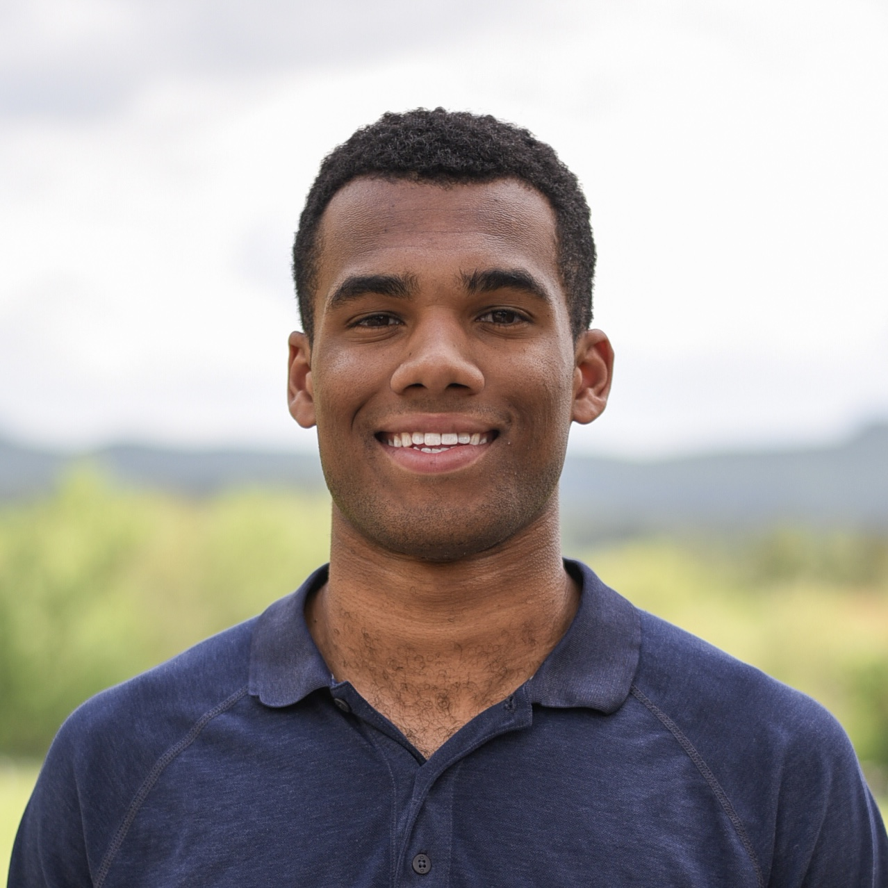

I am a fifth-year electrical engineering student at Dartmouth College, having previously graduated from Amherst College with a degree in math.
Throughout undergrad, I have taken a broad course load, including classes in physics and computer science. My research interests include quantum engineering, quantum information science, and reinforcement learning. [resume]
Currently, I am working on a thesis where I am applying quantum optimal control methods to bosonic code state preparation.
Misc
- I won an NCAA National Championship in soccer at Amherst
- Avid Arsenal, New York City FC, and Yankees fan
- Highly recommend watching Black Mirror and reading Ted Chiang
- Here are some of the movies I like